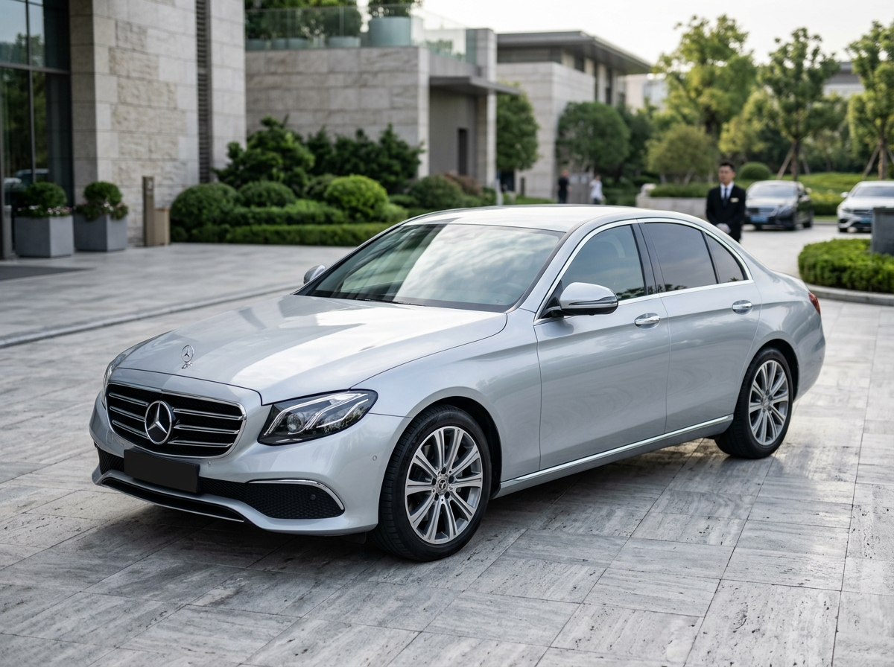
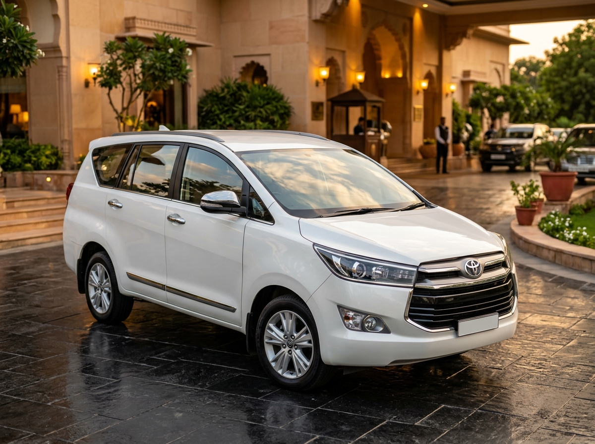

Mercedes
Local darshan, railway station pickup aur lambi highway yatra ke liye aaramdayak 4-seater AC Mercedes sedan.
Gaadi ki availability travel date ke hisaab se confirm karein.
Mercedes Book KareinNeeche diye gaye filter se apni pasand ki category chunein ya kisi bhi gaadi ki booking enquiry bhejein.

Local darshan, railway station pickup aur lambi highway yatra ke liye aaramdayak 4-seater AC Mercedes sedan.
Gaadi ki availability travel date ke hisaab se confirm karein.
Mercedes Book Karein
Couples, akele yatri aur local Ayodhya darshan ke liye achhi gaadi. AC seating ke saath city travel ke liye upyukt.
Gaadi ki availability travel date ke hisaab se confirm karein.
Swift Dzire Book Karein
Family aur group ke saath Ayodhya darshan aur doosre shehron ki yatra ke liye 3-row seating wali gaadi.
Gaadi ki availability travel date ke hisaab se confirm karein.
Maruti Ertiga Book Karein
Ayodhya darshan aur outstation trips ke liye aaramdayak 4 seater + 1 driver AC SUV, jisme luggage ke liye achhi jagah milti hai.
Gaadi ki availability travel date ke hisaab se confirm karein.
Honda Elevate Book Karein
Lambi doori ki yatra aur parivaar ke saath safar ke liye spacious aur aaramdayak gaadi.
Gaadi ki availability travel date ke hisaab se confirm karein.
Innova Crysta Book Karein
Family trip aur group travel ke liye modern 3-row seating wali gaadi, jisme safar ke dauran achhi jagah milti hai.
Gaadi ki availability travel date ke hisaab se confirm karein.
Kia Carens Book Karein
Bade parivaar, yatri mandali, senior citizen groups aur baraat ke mehmaanon ke liye pushback seats wala AC Tempo Traveller.
Advance booking par seating capacity confirm ki jati hai.
Tempo Traveller Book Karein
Shaadi mein dulha-dulhan ki car, parivaar ke liye gaadiyan aur baraat ke mehmaanon ke liye shuttle cars ki suvidha.
Travel dates aur zaroorat ke hisaab se book karein.
Wedding Cars Book KareinGaadi Aur Availability Ki Jaankari: Yahan dikhayi gayi photos gaadi ki category samajhne ke liye hain. Aapki travel date, seating aur trip ke hisaab se sahi gaadi aur rate booking ke samay seedhe confirm kiye jaate hain.
Availability Check Karein